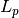
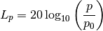
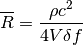

seapy.subsystems.subsystemacoustical.SubsystemAcoustical¶
- class seapy.subsystems.subsystemacoustical.SubsystemAcoustical(name, system, **properties)[source]¶
Bases: seapy.subsystems.subsystem.Subsystem
Abstract base class for all acoustical subsystems.
- __init__(name, system, **properties)¶
Constructor.
Parameters: - name (string) – Identifier
- component (SeaPy.components.Component) – Component
Methods
__init__(name, system, **properties) Constructor. addExcitation(name, model, **properties) Add excitation to subsystem. SubsystemAcoustical.df disable([couplings]) Disable this subsystem. enable([couplings]) Enable this subsystem. info([attributes]) Return dataframe. plot(quantity[, yscale]) Plot quantity. Attributes
SORT str(object=’‘) -> str average_frequency_spacing “ classname Name of class of the object. component conductance Conductance  .
.conductance_point_average Average point conductance of an acoustic component. damping_term The damping term is the ratio of the modal half-power bandwidth to the average modal frequency spacing. dlf Damping loss factor of subsystem. enabled Switch indicating whether the object is enabled. energy Total energy  in subsystem.
in subsystem.frequency Frequency. impedance Impedance 
included Indicates whether the object is included in the analysis. linked_couplings_from linked_couplings_to linked_excitations mobility Mobility Y modal_density Modal density. modal_energy Class capable of containing spectral values. modal_overlap_factor Modal overlap factor. name power_input Total input power due to excitations. pressure Mean sound pressure  .
.pressure_level Sound pressure level . resistance Resistance  , the real part of the impedance .
, the real part of the impedance .resistance_point_average Average point resistance of an acoustic component. soundspeed_group Group speed of a fluid in a duct with rigid walls. soundspeed_phase Phase speed of a fluid in a duct with rigid walls. tlf Total loss factor. wavenumber Wavenumber. - pressure_level[source]¶
Sound pressure level .
Return type: numpy.ndarray 
- resistance_point_average[source]¶
Average point resistance of an acoustic component.

See Lyon, page 149, equation 8.5.3